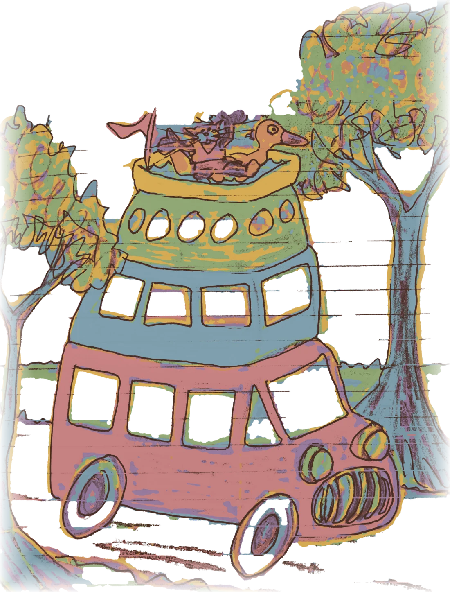

Floaties in the Pool
Draft story, written to fill this space. Nana's own version is coming.

The red bus has a cousin, and the cousin is even bigger. It is a bus on top of a bus on top of a bus: a red floor, a blue floor, a green floor with round windows, and on the very top, a swimming pool.
Inside, there is everything you could need for a long trip: a toilet, a sink, and a desk, in case you want to draw. But the best seats are up top, in the pool.
That is where the cat rides, in a pair of floaties, paddling slowly in circles. And next to the cat floats a duck, who does not need floaties, but wears them anyway, to be polite.
A little red flag waves over the pool so other buses can see them coming. When the bus goes around a corner, the water sloshes, and the cat holds on to the duck, and the duck holds on to the flag, and everybody shouts, "Again!"